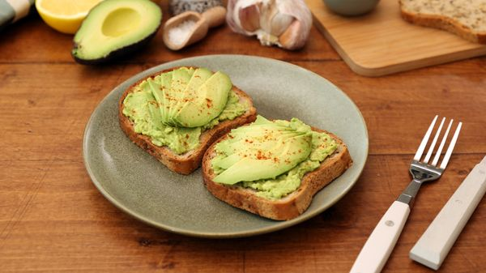

Avocado Toast

Description
du pain toaste avec des avocats dessus
Ingredients pour deux personnes
- poivre
- sel
- 1 cas d'huile d'olive
- 2 avocats
- 4 tranches de pain aux cereales
- 1 gousse d'ail
- 0.5 citron
Preparation
- Eplucher et hacher finement la gousse d'ail.
- Eplucher les avocats et retirer le noyau. Arroser de jus de citron pour empêcher qu'ils noircissent.
- Ecraser un avocat avec la gousse d'ail, l'huile d'olive, du sel et du poivre. Bien mélanger.
- Détailler le deuxième avocat en tranches.
- Tartiner les tranches de pain de purée d'avocat puis déposer sur chacune des tranches, l'équivalent d'un quart d'avocat. Parsemer de piment d'Espelette si vous vous sentez un peu crazy